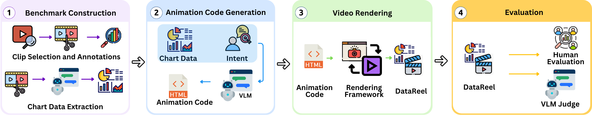
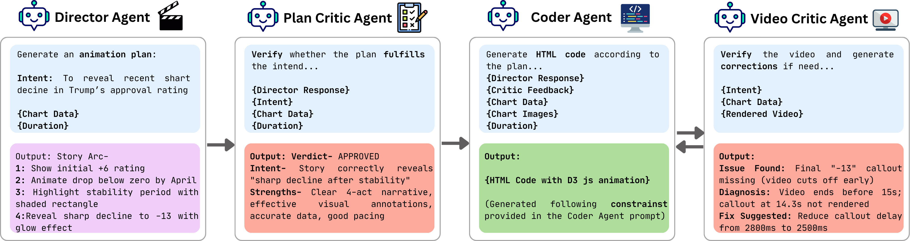

Data videos are a powerful medium for visual data-based storytelling, combining animated, chart-centric visualizations with synchronized narration. Widely used in journalism, education, and public communication, they help audiences understand complex data through clear and engaging visual explanations. Despite their growing impact, generating data-driven video stories remains challenging, as it requires careful coordination of visual encoding, temporal progression, and narration and substantial expertise in visualization design, animation, and video-editing tools. Recent advances in large language models offer new opportunities to automate this process; however, there is currently no benchmark for rigorously evaluating models on animated visualization-based video storytelling. To address this gap, we introduce DataReel, a benchmark for automated data-driven video story generation comprising 328 real-world stories. Each story pairs structured data, a chart visualization, and a narration transcript, enabling systematic evaluation of models' abilities to generate animated data video stories. We further propose a multi-agent framework that decomposes the task into planning, generation, and verification stages, mirroring key aspects of the human storytelling process.

Overview: (1) Construct benchmark by collecting real-world data reels and extracting chart data. (2) Given chart data and user intent, VLMs generate animation code. (3) Code is rendered into the final data video. (4) Videos are evaluated via human assessment and VLM-based judge.

Four specialized agents: (1) Director Agent converts intent and data into an animation plan. (2) Plan Critic Agent verifies alignment with intent. (3) Coder Agent generates executable HTML/D3.js code. (4) Video Critic Agent evaluates the rendered video and sends corrections if needed.
@misc{mahbub2026datareelautomateddatadrivenvideo,
title={DATAREEL: Automated Data-Driven Video Story Generation with Animations},
author={Ridwan Mahbub and Syem Aziz and Mahir Ahmed and Shadikur Rahman and Mizanur Rahman and Shafiq Joty and Enamul Hoque},
year={2026},
eprint={2604.25220},
archivePrefix={arXiv},
primaryClass={cs.AI},
url={https://arxiv.org/abs/2604.25220},
}